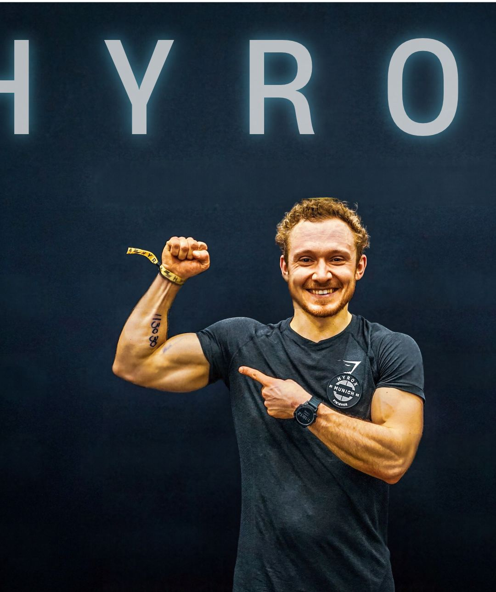

Running
Running
2:35Bestzeit
2:30Ziel
Keep Grinding & beat yesterday
Meine Bestzeit liegt bei 2:35 Stunden, jetzt greife ich die 2:30 an. Ich weiß, wie sich harte Wochen, Tempoläufe und die letzten zehn Kilometer anfühlen.
Von einem Coach, der selbst beim Marathon am Start steht, Gewichte im Fitnessstudio bewegt, durch eigene Erfahrung weiß worauf es bei der Triathlon Langdistanz ankommt und auch spontan neues wie Hyrox ausprobiert.

Ich schreibe dir keine Einheit in den Plan, die ich nicht selbst kenne. Egal ob Marathon, Langdistanz oder Krafttraining.
Running
Meine Bestzeit liegt bei 2:35 Stunden, jetzt greife ich die 2:30 an. Ich weiß, wie sich harte Wochen, Tempoläufe und die letzten zehn Kilometer anfühlen.
 Erfahrung · Boston Marathon
Erfahrung · Boston Marathon
Bei jedem Rennen hab ich etwas über Tempo, Tapering und Verpflegung gelernt. Die größten learnings hatte ich dabei bei diesen Marathon. Und genaud dieses Wissen steckt in deinem Plan.
Training wirkt nur mit der passenden Ernährung. Ich plane beides: deinen normalen Arbeitstag und deinen Renntag.
 Strength · Fitnesstrainer
Strength · Fitnesstrainer
Krafttraining, das dich stärker und schneller macht.
 Triathlon · Langdistanz
Triathlon · Langdistanz
3,8 km Schwimmen, 180 km Rad, 42,2 km Laufen. Erfordert das Zusammenspiel von Training, Ernährung und Mindset.
Laufen, Ernährung und Kraft werden bei mir nicht getrennt geplant. Alles passt zu deinem Ziel und zu deiner Arbeitswoche.
Ein individueller Plan, zugeschnitten für deinen Alltag.
Essen, das zu deinem Training und deinem Alltag passt. Is(s) besser.
Muskelaufbau, Kraft und Stabilität.
30 Minuten, kostenlos. Wir sprechen über dein Ziel und deinen Alltag.
Leistungsstand, Alltag, Ernährung, bisherige Verletzungen.
Dein Plan liegt in der MyPerformance-App, jede Einheit mit Tempo und Ziel.
Progress durchs Training, Fortschritte tracken, Training anpassen.
Wunschgewicht durch Ernährung, Neue PB mit Tapern und Volumen, Muskelaufbau mit neuen Plan. Alles individuell alles einzigartig.
Jedes Paket ist auf dich zugeschnitten. Wenn du unsicher bist, fang mit dem kostenlosen Erstgespräch an.
Deine Woche, deine Einheiten und dein Fortschritt auf einen Blick in der Web-App.


Seit 2017 begleite ich Menschen dabei, fitter, gesünder und schneller zu werden. Als Laufcoach, Fitnesstrainer und Ernährungsberater.
Ich trainiere wie die meisten meiner Athleten: früh am Morgen, nach Feierabend, zwischen Terminen. Ich habe einen Vollzeitjob und laufe trotzdem Marathon auf hohem Niveau. Dafür braucht es keinen perfekten Alltag, sondern einen Plan, der zum eigenen Alltag passt. Genau den baue ich mit dir.
Regelmäßig trainieren bringt mehr als hart trainieren. Wir bauen einen Plan, den du durchhältst.
Ich sage dir, was dich schneller macht und was nicht. Praxisnah und ohne Hype.
Laufen ist für mich mehr als Sport. Diese Begeisterung gebe ich weiter.
Chasing 2:30h 5 Minuten schneller runtergebrochen "nur" rund 7 Sekunden pro Kilometer für 42,195km - just do it!. Den Weg dorthin teile ich offen auf Instagram, mit allen guten und schlechten Wochen.
Drei der sechs World Marathon Majors.
Schwimmen, Rad und Marathon.
Aktuelle Marathon-Bestzeit.
2:35h.
Mehrere Rennen geplant. Folge mir, um dabei zu sein.

Erstmal: Danke für dein Interesse – und sorry, dass gerade keine Termine frei sind! Ich möchte meine Athleten bestmöglich betreuen, deshalb haben alle, die bereits mit mir arbeiten, bei der Terminvergabe Vorrang. Außerdem betreue ich bewusst nur eine begrenzte Anzahl an Athleten gleichzeitig – Quality over Quantity. Schreib mir trotzdem gern direkt eine Mail: Vielleicht finden wir einen früheren Slot für dich, oder ich reserviere dir einen. Würde mich freuen!
Klasse – den ersten wichtigen Schritt hast du schon gemacht! Wenn wir bisher noch keinen Kontakt hatten, buch am besten das kostenlose Erstgespräch. Wir analysieren deinen Ist-Zustand und finden den idealen Einstieg für dich. Alles Weitere kommt dann. ;)
Wenn beide Seiten das Gefühl haben, dass die Zusammenarbeit gut passen würde, erarbeiten wir – je nach Ziel – deinen ersten Plan. Falls nicht, entstehen für dich keine Kosten, und jeder geht seinen Weg weiter wie zuvor. Easy.
Ehrlich? Das schauen wir uns gemeinsam an. Je nach verbleibender Zeit gebe ich dir eine ehrliche Einschätzung, ob das realistisch ist – oder eben noch nicht.
Je nachdem, was du brauchst, erstellen wir dir einen Plan, der genau auf deine Ziele zugeschnitten ist. Und falls du technische Einweisungen oder Erklärungen brauchst, finden wir individuelle Lösungen – von Athlet zu Athlet.
Da ich aktuell noch ein One-Man-Team bin, läuft die Zahlung unkompliziert über PayPal. Alles Weitere entwickelt sich mit der Zeit – we will see.
Kann immer mal passieren – und ist auch mal völlig okay. Gib mir idealerweise mindestens 24 Stunden vorher per Mail an matzesperformance@gmail.com Bescheid. Ich bin fair – erwarte das aber im Gegenzug genauso.
Schreib mir kurz, was du vorhast. Ich melde mich so schnell wie möglich bei dir.